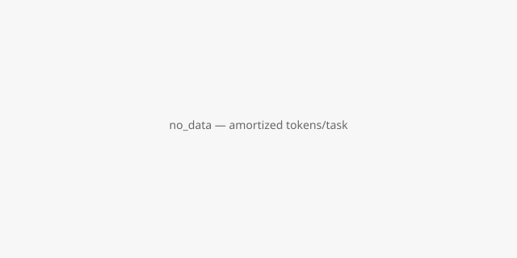
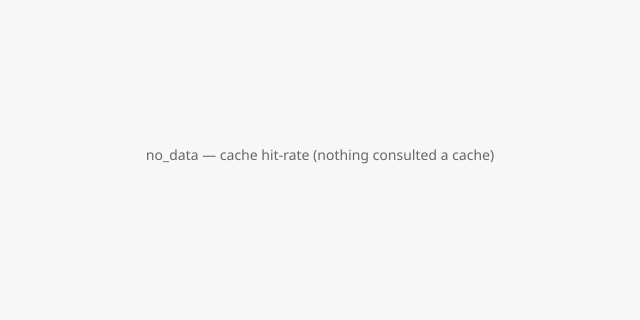

| metric | status | value | formula |
|---|---|---|---|
| step-level replay-validity | computed | 0.7678571428571429 | count(replay_valid=true) / count(compiled steps executed) |
| task-level success (with ≤2 repairs/run) | computed | 0.125 | count(success_with_le_2_repairs=true) / count(runs) |
| repair cost vs fresh (tokens) | computed | 0.014906061306137293 | mean(cost_repair.tokens) / mean(cost_fresh.tokens) |
| repair cost vs fresh (wall-clock) | computed | 0.14287831537486254 | mean(cost_repair.wall_clock_ms) / mean(cost_fresh.wall_clock_ms) |
| self-heal success rate | computed | 0.8571428571428571 | count(self_healed=true) / count(runs with steps_replay_valid < steps_total) |
| time-to-repair (mean ms) | computed | 6687.388888888889 | mean(time_to_repair_total_ms) over runs with repairs |
| amortized tokens/task over N runs | no_data | null | (sum(cost_program_build where present + cost_repair + cost_replay) over first N runs) / N — no_data unless some run in the window carries a measured cost_program_build, and no_data if any run in the window has repair_cost_measured=false |
| cache hit-rate over N runs | no_data | null | count(program_source=cache AND replay_valid=true) / count(program_source=cache) |

